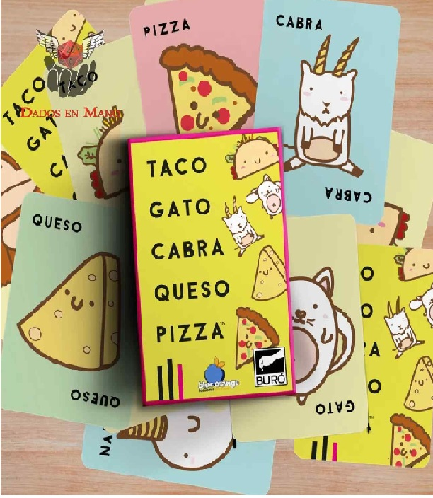
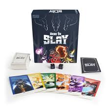

Bienvenido al Room 20 donde replicamos tus juegos de mesa favoritos donde conoceras juegos de mesa nuevos y emocionantes para jugar con tus amigos



Bienvenido al Room 20 donde replicamos tus juegos de mesa favoritos donde conoceras juegos de mesa nuevos y emocionantes para jugar con tus amigos
Room 25 es un juego de mesa de tensión y supervivencia en el que los jugadores están atrapados en un complejo lleno de habitaciones peligrosas. Cada sala puede contener trampas mortales, efectos impredecibles o ayudas temporales.
Catan es un juego de mesa de estrategia en el que los jugadores compiten por colonizar una isla rica en recursos. Cada jugador construye pueblos, ciudades y caminos usando materiales como madera, ladrillo, trigo, ovejas y piedra. Los recursos se obtienen según los números que salgan en los dados y mediante el comercio con otros jugadores.
Cyclades es un juego de mesa estratégico ambientado en la antigua Grecia, donde las ciudades-estado compiten por el dominio del archipiélago. Para expandirse, los jugadores deben invocar la ayuda de los dioses, gestionar sus recursos y reclutar ejércitos y flotas.
5 Minutos en el Calabozo es un juego cooperativo de ritmo frenético en el que los jugadores forman un equipo de héroes que debe superar un calabozo lleno de monstruos, trampas y obstáculos… ¡en solo cinco minutos!, cada jugador utiliza una baraja propia y juega cartas rápidamente para enfrentar los desafíos que van apareciendo, sin turnos y bajo presión constante. La comunicación y la velocidad son esenciales para avanzar antes de que el tiempo se agote.